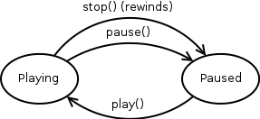

A Source represents audio you can play back. You can do interesting things with Sources, like set the volume, pitch, and its position relative to the listener. Please note that positional audio only works for mono (i.e. non-stereo) sources.
The Source controls (play/pause/stop) act according to the following state table.
| Playing | Paused | |
|---|---|---|
| play() | No change | Play |
| stop() | Pause + Rewind | Rewind |
| pause() | Pause | No change |
And for fans of flowcharts (note: omitted calls have no effect, stopping always rewinds).

Constructors
| love.audio.newQueueableSource | Creates a new Source usable for real-time generated sound playback with Source:queue. | ||
| love.audio.newSource | Creates a new Source from a file, SoundData, or Decoder. |
Functions
| Object:release | Immediately destroys the object's Lua reference. | ||
| Object:type | Gets the type of the object as a string. | ||
| Object:typeOf | Checks whether an object is of a certain type. | ||
| Source:clone | Creates an identical copy of the Source in the stopped state. | ||
| Source:getAirAbsorption | Gets the amount of air absorption applied to the Source. | ||
| Source:getAttenuationDistances | Gets the reference and maximum attenuation distances of the Source. | ||
| Source:getChannelCount | Gets the number of channels in the Source. | ||
| Source:getChannels | Gets the number of channels in the Source. | ||
| Source:getCone | Gets the Source's directional volume cones. | ||
| Source:getDirection | Gets the direction of the Source. | ||
| Source:getDistance | Returns the reference and maximum distance of the source. | ||
| Source:getDuration | Gets the duration of the Source. | ||
| Source:getEffect | Retrieve filter settings associated to a specific effect. | ||
| Source:getFilter | Gets the filter settings currently applied to the Source. | ||
| Source:getFreeBufferCount | Gets the number of free buffer slots of a queueable Source. | ||
| Source:getPitch | Gets the current pitch of the Source. | ||
| Source:getPosition | Gets the position of the Source. | ||
| Source:getRolloff | Returns the rolloff factor of the source. | ||
| Source:getType | Gets the type of the Source. | ||
| Source:getVelocity | Gets the velocity of the Source. | ||
| Source:getVolume | Gets the current volume of the Source. | ||
| Source:getVolumeLimits | Returns the volume limits of the source. | ||
| Source:isLooping | Returns whether the Source will loop. | ||
| Source:isPaused | Returns whether the Source is paused. | ||
| Source:isPlaying | Returns whether the Source is playing. | ||
| Source:isRelative | Gets whether the Source's position and direction are relative to the listener. | ||
| Source:isStatic | Returns whether the Source is static. | ||
| Source:isStopped | Returns whether the Source is stopped. | ||
| Source:pause | Pauses a source. | ||
| Source:play | Plays a source. | ||
| Source:queue | Queues SoundData for playback in a queueable Source. | ||
| Source:resume | Resumes a paused source. | ||
| Source:rewind | Rewinds a source. | ||
| Source:seek | Sets the currently playing position of the Source. | ||
| Source:setAirAbsorption | Sets the amount of air absorption applied to the Source. | ||
| Source:setAttenuationDistances | Sets the reference and maximum attenuation distances of the Source. | ||
| Source:setCone | Sets the Source's directional volume cones. | ||
| Source:setDirection | Sets the direction of the Source. | ||
| Source:setDistance | Sets the reference and maximum distance of the source. | ||
| Source:setEffect | Applies an audio effect to the Source. | ||
| Source:setFilter | Sets a low-pass, high-pass, or band-pass filter to apply when playing the Source. | ||
| Source:setLooping | Sets whether the Source should loop. | ||
| Source:setPitch | Sets the pitch of the Source. | ||
| Source:setPosition | Sets the position of the Source. | ||
| Source:setRelative | Sets whether the Source's position and direction are relative to the listener. | ||
| Source:setRolloff | Sets the rolloff factor. | ||
| Source:setVelocity | Sets the velocity of the Source. | ||
| Source:setVolume | Sets the current volume of the Source. | ||
| Source:setVolumeLimits | Sets the volume limits of the source. | ||
| Source:stop | Stops a source. | ||
| Source:tell | Gets the currently playing position of the Source. |
Enums
| FilterType | Types of filters for Sources. | ||
| SourceType | Types of audio sources. |
Supertypes
See Also